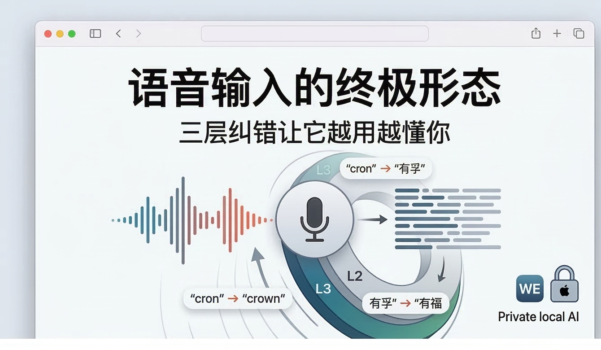
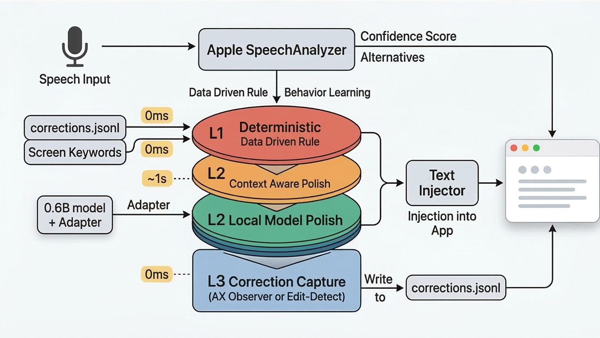
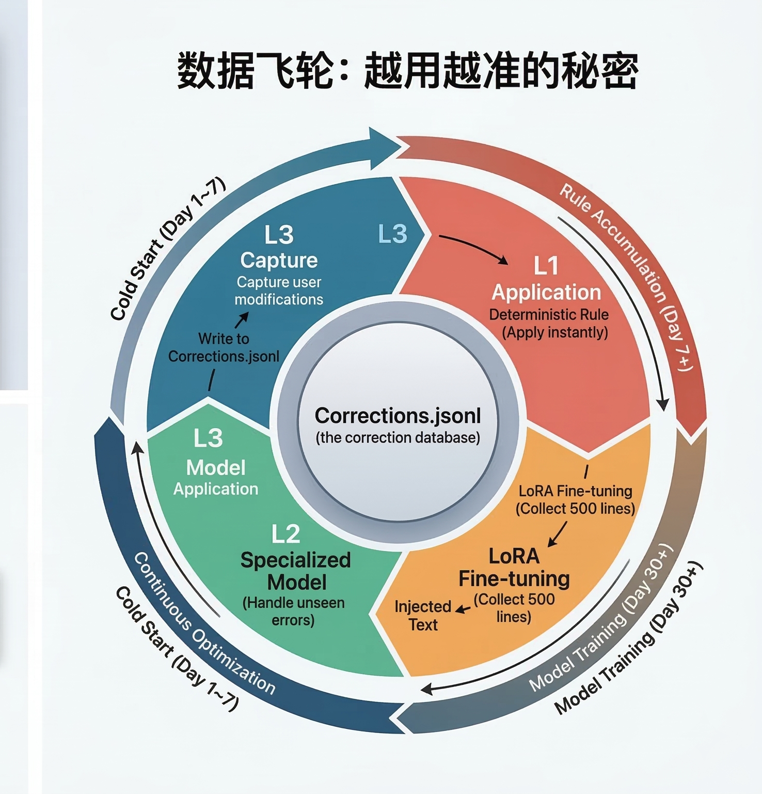

用语音输入写过东西的人都知道那种抓狂——
你说"帮我设置一个 cron"，它给你打成"帮我设置一个 crown"；你说"广州有孚机房"，它听成"广州有福机房"；你说"fallback 方案"，出来的是"for back 方案"。
每次手动改完，你心里都在想：它就不能记住吗？我已经改过很多次了。
这就是我做 Ambient Voice 这个项目的起点。我不想做一个"一次性很准"的语音识别工具，而是想做一个会从你的修改中学习、越用越准的语音输入系统。
语音识别引擎（Apple SpeechAnalyzer）的出错是不可避免的——同音词、专业术语、上下文歧义，总会有搞不定的情况。
所以我换了个思路：与其押注单一模型的准确率，不如建立一个能从错误中学习的系统。
Ambient Voice 的答案是一个三层纠错架构，每一层解决不同类型的问题，且计算开销递增：

Apple 的语音引擎其实比你想象的"聪明一点"——它不只给一个识别结果，还会附带置信度（它有多确定）和候选列表（其他可能的结果）。
L1 的逻辑非常朴素：
置信度高？→ 不动它，绝对不动。
置信度低？→ 去翻你的纠错记录和屏幕上的关键词，看看候选列表里有没有匹配的。有就换，没有就保留原样。
屏幕上有 fallback 这个词，语音识别出来是 for back（置信度低），候选列表里恰好有 fallback → L1 直接替换。
L1 能处理"见过的错误"，但遇到从未出现过的新错误怎么办？这就需要模型上场了。
但我没有选择调用云端大模型，而是在本地跑一个 0.6B 参数的小模型（Qwen3-0.6B）。
| 云端 API | 本地 0.6B | |
|---|---|---|
| 延迟 | 1-3 秒 | ~1 秒 |
| 隐私 | 数据上传云端 | 数据不出设备 |
| 费用 | 按量付费 | 免费 |
| 离线 | 不可用 | 可用 |
关键设计点：L2 不做全文润色，只处理低置信度的片段。
一句话里大部分词置信度都在 0.8 以上，只有"有福"这个词置信度是 0.3。L2 只把这个词和它的前后文发给模型，模型返回"有孚"，然后拼回去。
高置信度的词永远不经过模型——零延迟、零风险。
通用的 0.6B 模型还不够好，所以我的计划是：用你自己的纠错数据（L3 采集的），微调一个专用的 LoRA adapter。0.6B 的通用能力不行，但在"语音纠错"这个窄场景下，经过微调完全可以达到可用水平。
L3 是整个系统的"暗线"——你感觉不到它的存在，但它是飞轮转起来的关键。
文本注入到当前 app 后，L3 开始静默监听。如果你对注入的文字做了修改然后提交，L3 就捕获"改之前"和"改之后"的差异，写入纠错数据库。
Ambient Voice 注入：你帮我设置一个crown
你改为：你帮我设置一个cron
L3 记录下这个纠错对。当同样的错误出现 2 次以上，L1 下次就会自动替换。
为了适配不同 app 的技术架构，L3 有两种捕获模式：
AX Observer 模式——通过 macOS 辅助功能 API 实时追踪文本变化，覆盖 Telegram、Obsidian、Chrome 等标准 app。
Edit-Detect 模式——对于辅助功能 API 不好使的 app（微信、终端、Claude），通过监听退格键和提交时快照来判断你是否做了修改。
系统会自动检测当前 app 适合哪种模式，你完全不需要操心。
三层不是各干各的——它们形成一个正反馈循环：

| Day 1~7 | 冷启动期。L1 只靠语音引擎自带的候选 + 屏幕关键词，纠错能力有限。 |
| Day 7+ | 规则积累。同一纠错出现 2 次以上，L1 开始自动替换，你能明显感觉到它"懂了"。 |
| Day 30+ | 积累到 500 条数据，可以微调专用 adapter，L2 上线处理从未见过的错误。 |
| 持续 | L3 继续采集 → L1 规则持续更新 → L2 定期重训。系统越来越懂你的用词习惯。 |
这就是为什么我说"不追求一次完美，而是建立闭环"——完美是一个持续逼近的过程，而不是一个起点。
Ambient Voice 的定位是私密的 AI 语音入口。你对着麦克风说的每一句话、每一次纠错记录，都只存在你自己的 Mac 上，不会上传到任何服务器。
这也是为什么要在本地跑 0.6B 模型而不是调云端 API——隐私不是一个"Nice to have"的功能，而是架构层面的硬约束。
|
<100ms
端到端延迟
|
121MB
模型内存占用
|
0
数据上传量
|
语音输入这件事，大家都在卷识别准确率。但我觉得方向不该是"一次识别就完美"——这在物理上很难做到，尤其是面对专业术语、方言、个人用语习惯的时候。
更好的方向是：让系统能从你的每一次修改中学习。
用了一周，它知道你总是把"crown"改成"cron"；用了一个月，它甚至能理解你的专业语境。这不是什么黑科技，只是把用户行为作为训练信号的一个朴素想法，加上一个恰到好处的三层架构。
如果你也被语音输入折磨过，或者对"端侧 AI + 隐私优先"的产品思路感兴趣，欢迎交流。